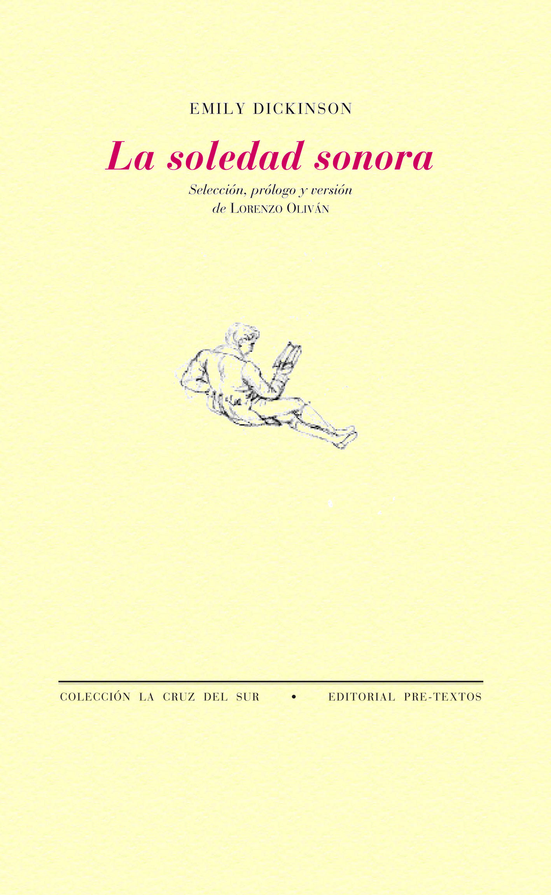

Libros
Poemas Agrestes

Poemas:
El viaje definitivo
Poema recitado:
La soledad sonora

Poemas:
Pájaro errante y lírico
Poema recitado:
Baladas de primavera

Poemas:
El poeta a caballo
Cantautor/a:
Luigi Maráez